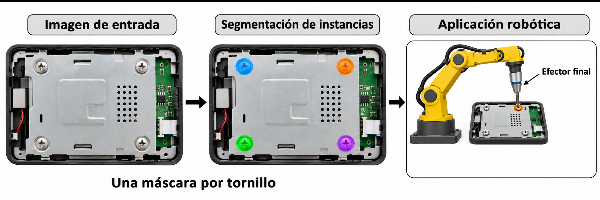

Segmentación de instancias de tornillos en WDSD#
Entregable 1 del proyecto de Deep Learning
Ivan Berrio, Jose David Castillo y Jaime Besada
Propósito#
En el desmontaje automatizado de residuos de aparatos eléctricos y electrónicos (Waste Electrical and Electronic Equipment, WEEE), un robot debe localizar cada tornillo antes de retirarlo. Este proyecto estudia el problema como segmentación de instancias: para cada imagen se obtiene una máscara por tornillo, de modo que se distingan tanto su ubicación como su forma visible.
La pregunta que guía el trabajo es qué modelo localiza mejor los tornillos en escenas no vistas. Para responderla, se analiza el WEEE Disassembly Screw Dataset (WDSD), se revisa la literatura y se comparan tres modelos base de segmentación de instancias.


Figura 1 Esquema conceptual de la segmentación de instancias y su posible aplicación robótica. Cada máscara identifica un tornillo y delimita su forma visible para apoyar su localización antes de una posible acción del efector final.#
Datos#
Se usa el WEEE Disassembly Screw Dataset (WDSD; Kalitsios et al., 2022, ICRCV, 10.1109/ICRCV55858.2022.9953178): 945 imágenes de 1280 × 720 con 4.398 tornillos anotados. Las anotaciones siguen el formato COCO (Common Objects in Context): para cada tornillo incluyen su categoría, un polígono de segmentación, una caja delimitadora y el área. La partición agrupa las imágenes por sesión de captura (744/93/108 imágenes; 14 grupos en prueba) para evitar fuga por casi duplicados.
La página oficial permite descargar WDSD, pero no publica una licencia, y tampoco la publican el repositorio ni el artículo de los autores. Por eso el dataset no se incluye en el repositorio del proyecto.
Resultados principales#
Para evaluar los modelos, se compara cada máscara predicha con las máscaras de referencia, que delimitan los tornillos anotados en el dataset. La intersección sobre unión (IoU) mide cuánto coinciden dos máscaras: divide el área que comparten entre el área total que ocupan juntas. Su valor va de 0, cuando no se superponen, a 1, cuando coinciden por completo. Aquí se exige una IoU de al menos 0,5 para considerar una coincidencia válida.
Como una imagen puede contener varios tornillos, también hace falta decidir qué predicción corresponde a cada anotación. El algoritmo húngaro resuelve esa asignación entre predicciones y referencias, manteniendo una correspondencia de uno a uno para evitar contar varias veces un mismo tornillo.
La medida principal es el F1 de instancia, calculado por imagen. Combina la precisión —qué proporción de los tornillos detectados corresponde a tornillos anotados— y la sensibilidad —qué proporción de los tornillos anotados logró detectar el modelo— mediante su media armónica: F1 = 2 × precisión × sensibilidad / (precisión + sensibilidad). Un valor cercano a 1 indica pocos falsos positivos y pocos tornillos omitidos; un valor bajo refleja dificultades en uno o ambos aspectos.
Como medidas complementarias se presentan la calidad panóptica (PQ), que combina la detección de los tornillos con la coincidencia de sus máscaras, y la precisión promedio con IoU de al menos 0,5 (AP50), que resume la relación entre precisión y sensibilidad al variar el nivel de confianza exigido a las predicciones. La tabla muestra la media y la desviación estándar de cada métrica en cinco entrenamientos con distintas semillas aleatorias:
Modelo |
F1 de instancia |
PQ |
AP50 de máscara |
|---|---|---|---|
Mask R-CNN |
0,447 ± 0,017 |
0,313 ± 0,011 |
0,587 ± 0,010 |
YOLOv8-seg |
0,521 ± 0,061 |
0,365 ± 0,040 |
0,637 ± 0,019 |
SOLOv2 |
0,297 ± 0,027 |
0,210 ± 0,017 |
0,285 ± 0,017 |
YOLOv8-seg alcanza la media más alta por imagen. En la comparación estadística por grupos de escena, SOLOv2 queda por debajo de los otros dos; la diferencia entre Mask R-CNN y YOLOv8-seg no es concluyente con los 14 grupos de prueba disponibles. Por ello, los resultados se presentan como una línea base y no como una conclusión de superioridad definitiva.
Cómo recorrer el libro#
Cada capítulo contiene sus tablas, figuras y explicaciones completas, así que el informe se lee entero desde estas páginas.
Datos: Análisis exploratorio, con las imágenes y su partición (EDA 1) y los tornillos y sus máscaras (EDA 2).
Modelos: 3. Revisión de literatura, que explica por qué se eligieron los tres modelos, y 4. Implementación de los modelos base, con el protocolo de entrenamiento y la selección de hiperparámetros.
Resultados: 5. Línea base estadística y 6. Conclusiones.
Anexo: Reproducibilidad, con los datos, los entornos y los comandos para repetir el trabajo.
Alcance y límites de la evidencia#
El conjunto contiene 945 imágenes de 1280 × 720 y 4.398 instancias anotadas. La partición mantiene juntas las imágenes de una misma escena: 744 para entrenamiento, 93 para validación y 108 para prueba. En la prueba hay 14 grupos, por lo que la incertidumbre estadística se calcula remuestreando escenas y no imágenes aisladas.
El margen práctico es δ = 0,20 puntos de F1 y se propone para juzgar modelos avanzados frente a la línea base. Se eligió después de obtener los resultados de estos tres modelos, así que no fue un criterio previo para decidir entre ellos. El informe contrasta su motivación con un proceso físico de atornillado, pero la medida física reportada en ese trabajo no se convierte directamente en puntos de F1; δ se interpreta dentro de este benchmark y no como una tolerancia industrial validada.
La guía del curso presenta FCN, codificador–decodificador y U-Net reducida como ejemplos generales de segmentación. Aquí se eligieron modelos de segmentación de instancias porque la salida distingue cada tornillo; por eso la terna no coincide literalmente con esos ejemplos generales.
No se midió por separado el tiempo de inferencia, ni se afirma que el éxito de segmentación garantice que un robot pueda retirar el tornillo: eso requiere validación física. Las métricas se calculan respecto a las anotaciones disponibles; los tornillos visibles que carezcan de etiqueta pueden afectar su interpretación.